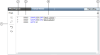

APOGEE PPCL Viewer
Review the following topics as needed:
PPCL Viewer Overview
The PPCL Viewer is available in Operating Mode (or in Engineering Mode if the management station has been set not to allow panel configuration) and is used to view control programs written with the Powers Process Control Language (PPCL). The PPCL Viewer allows you to do the following:
- View an existing program
- Go to specified lines of code in a program
- Search for text in a program
- Clear trace bits in a program
- Refresh a program to synchronize data in the field panel with the data displayed in the PPCL Viewer
PPCL Viewer Workspace

Item | Description |
1 | PPCL Viewer Toolbar Includes the following controls: Go To Program Statement: Allows you to go to the specified line of code in the program. Search Text: Allows you to search text.. Clear Program Trace Bits: Clears trace bits and unresolved lines of code in the program. Trace bits appear in the Status column as a T. Unresolved lines of code appear in the Status column as a red U. Refresh Program: Connects to the field panel and reads program statements and their status. In other words, after clicking Refresh, the data in the field panel and the data displayed in the PPCL Viewer are synchronized. |
2 | Status Column:Displays T for trace bits and a red U for unresolved lines of code. |
3 | Program Line Numbers: Displays line numbers for program statements. |
4 | Underlined Point Name: Indicates a point that can be clicked for further information. Single-clicking the point name sends point property information to the Contextual pane (Operations, Extended Operations, Related Items, and Extended Items tabs). Double-clicking the point name makes it the new primary selection. |
5 | Horizontal Splitter: Allows you to divide a PPCL Program into two sections. This is useful for viewing long programs whose entire code you cannot view in the limited space of one window or section. |
Right Mouse Button
The right mouse button provides access to limited commands in the PPCL Viewer. Placing the cursor anywhere inside the program window and clicking the right mouse button displays a popup menu with the following commands enabled:
- Copy
- Select All
- Clear Selected Trace Bits